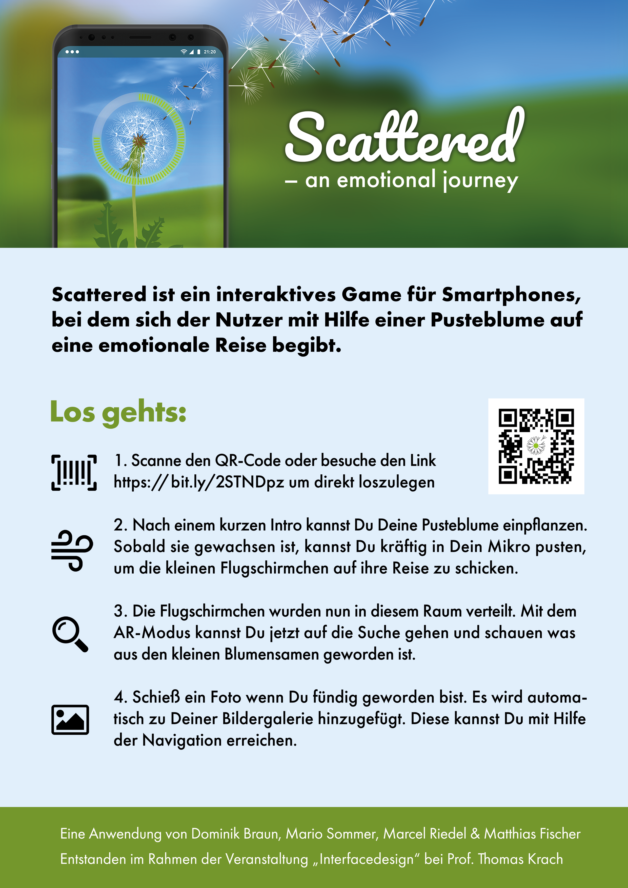
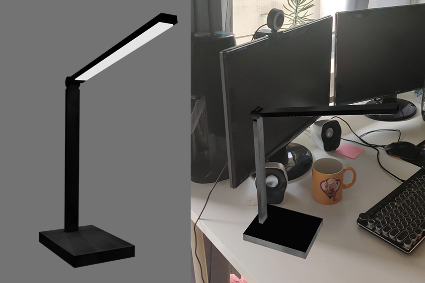

Projekte
Scattered ist ein interaktives Erlebnis für Smartphones, bei dem man sich mit einer Pusteblume auf eine Reise begibt.
Das Konzept
Das Konzept
Sobald der Nutzer die App startet, führt ihn ein kurzes Intro-Video in die Anwendung ein. Jeder Nutzer kann den virtuellen Flugsamen eines Löwenzahns in einpflanzen und die entstehende Pusteblume in die Welt hinaussenden. Die Flugsamen fliegen aus dem Bild hinaus, und verteilen sich auf der ganzen Welt.
Andere Spieler können mit Hilfe des AR-Modus der App nun auf die Suche nach den verteilten Flugsamen gehen, die an der Erdoberfläche darauf warten, gefunden und eingepflanzt zu werden. Bewegt sich ein Spieler innerhalb eines 10 Meter Radius, vibriert sein Handy, um auf einen nahegelegenen Flugsamen aufmerksam zu machen. Ist einer dieser Samen durch die AR-Kamera sichtbar, kann dieser angeklickt werden. Nun wird der Nutzer aufgefordert, ein Foto vom Fundort zu machen. Dieses wird automatisch an die Person gesendet, die diesen Samen auf die Reise geschickt hat.
Nachdem der zweite Spieler diesen Schritt absolviert hat, kann er den gefundenen Samen über sein eigenes Handy einpflanzen und eine neue Pusteblume entsteht. Die Samen dieser Pflanze können dann wieder weggepustet werden. Aus einer Blume entstehen somit viele weitere. Jeder nutzer kann verfolgen wo die Samen seiner Pusteblumen gelandet sind.
Umsetzung und verwendete Techniken
Umsetzung und verwendete Techniken
Scattered wurde in Form eines Prototyps teilweise umgesetzt. Ziel war es sich mit neuen Techniken und Augmented Reality auseinanderzusetzen um einen Protoypen zu erschaffen der in einem kleinen Raum funktioniert. Mit dem Prototyp ist es möglich Pusteblumen auf die Marker im Raum zu verteilen und diese anschließend durch ein Foto des 3D-Modells in der persönlichen Galerie abzuspeichern. Hierfür wurde Google Firebase verwendet um die Bilder abzuspeichern und diese in einer Datenbank abzulegen. Außerdem wurde Firebase zur Authentifizierung der Nutzer verwendet. Für die Animationen innerhalb der Anwendung wurde Lottie verwendet um als json exportierte After Effects Animationen im Web zu rendern. Für die Augmented Reality Erfahrung wurden AR.js und three.js verwendet.
Look Beyond ist ein Stop-Motion Film über Superhelden, Großeltern und die Fantasie eines kleinen Jungen.
Das Konzept
Das Konzept

Look Beyond ist ein Stop Motion Kurzfilm, der im Rahmen meines Projektstudiums entstanden ist. Hierfür haben wir uns mit der Stop Motion Technik auseinandergesetzt und eine Pipeline geschaffen um an der Hochschule Stop Motion Projekte zu verwirklichen. Das Set sowie die Figuren wurde alle selbst konzipiert und von Hand gefertigt. Um die Figuren zum sprechen zu bringen wurde ein Face Replacement Verfahren verwendet. Hierbei wurden die unterschiedlichen Gesichtausdrücke per 3D-Druckverfahren produziert. Meine Zuständigkeiten in diesem Projekt lagen primär im Bereich Sounddesign, Videoschnitt und die Verwendung der Stop-Motion Software. Verwendet wurde die Stop-Motion-Animationssoftware und Hardware Dragonframe zur Aufnahme und Planung der Szenen. Für die Erstellung der 3D-Modelle für Face Replacement und VFX wurde Blender genutzt. In der Postproduktion kamen Adobe Photoshop, Lightroom, Premiere, Audition und After Effects zum Einsatz.
Der fertige Film kann hier angesehen werden
Ein Prototyp zur Nutzung von Augmented Reality im Browser mit der WebXR Device API.
Der Prototyp
Der Prototyp
Dieser Prototyp ermöglicht es ein virtuelles Modell einer Schreibtischlampe durch die Smartphone Kamera im Raum zu platzieren. Dabei handelt es sich um ein AR-Erlebnis welches ohne Marker und im Browser genutzt werden kann. Der Prototyp verwendet die WebXR Device Api und das dazugehörige WebXR Hit Test Module um über Ray Casting Oberflächen in der realen Welt zu identifizieren.
Wenn Oberflächen erkannt werden wird das entsprechende Objekt dort dargestellt. Mit einem Tippen auf den Bildschirm wird es an der jeweiligen Stelle fixiert und die Kamera kann frei bewegt werden. Mit einem erneuten Tippen wird die Fixierung gelöst und das Objekt kann erneut platziert werden.
Mit Hilfe dieses Prototyps wurde im Rahmen meiner Bachelor-Thesis eine Studie durchgeführt um die Akzeptanz von Augmented Reality im Browser ohne die Verwendung eines Marker zu untersuchen.
Der Prototyp kann auf braundominik.github.io/webxr-prototype getestet werden (Nur für Mobilgeräte mit Chrome für Android)
Eine App, die den Nutzer durch Vibrationsfeedback zu interessanten Orten in einer Stadt begleitet.
Das Konzept
Das Konzept
Mit Places soll der Nutzer interessante Orte in einer Stadt erkunden können ohne dabei auf sein Smartphone blicken zu müssen. Durch Vibrationsfeedback wird einem mitgeteilt ob man sich in die richtige Richtung bewegt. Die Sehenswürdigkeit wird zufällig aus einer Liste von in der Nähe verfügbaren Sehenswürdigkeiten ausgesucht. Der Nutzer kann hierfür angeben wieviel Zeit zur Verfügung steht.
Der Grundgedanke hinter der Anwendung ist, dass der Nutzer beim Besuchen einer Stadt nicht vom Bildschirm des Smartphones abgelenkt wird. Durch die zufällige Auswahl der Orte und die Eingabe der zur Verfügung stehenden Zeit werden vor allem spontane Nutzer angesprochen. Außerdem macht es Spaß neue Orte auf diese Weise zu entdecken, da der Nutzer vorher nicht weiß, an welchen Ort ihn die App führen wird.
Umsetzung und verwendete Techniken
Umsetzung und verwendete Techniken
Places ist im Rahmen eines UX Seminars im zweiten Semester entstanden. Dabei habe ich mich mit der prototypischen Umsetzung der Anwendung beschäftigt. Die Hauptfunktionalität bestand darin die Position regelmäßig abzufragen und die Distanz zum Ziel zu kalkulieren. Wenn die Distanz zum Ziel sich erhöht wird eine Vibration des Geräts ausgelöst.